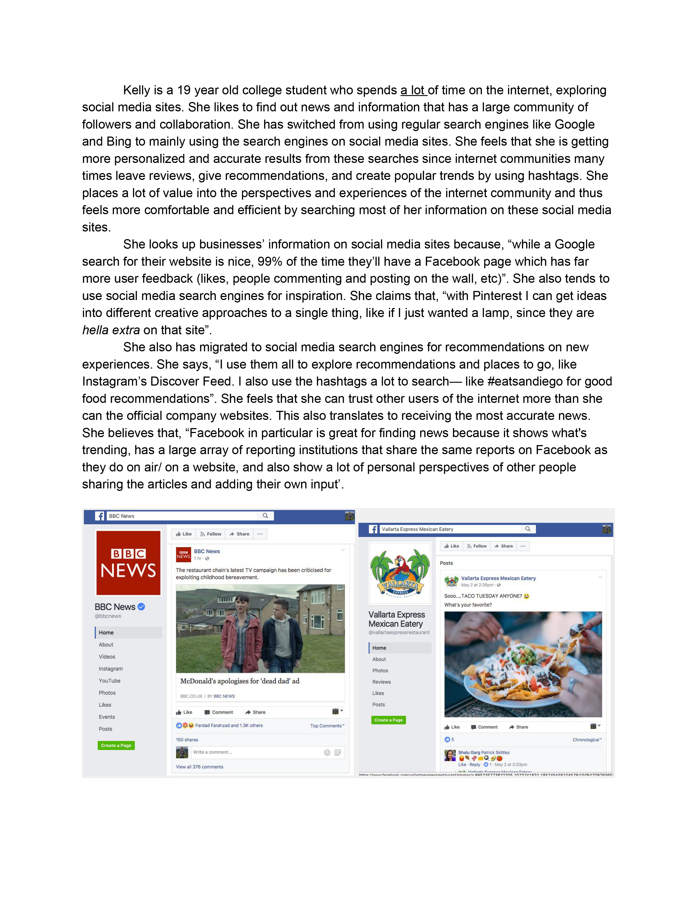

10 Domains to encounter Lead Users:
1. Backpackers during a trip
2. Frequent social media users
3. Military personnel during combat
4. Chefs in their restaurants
5. Lifeguard at the beach
6. Car mechanic during tune-up
7. Origami makers trying new designs
8. Makeup artists exploring new techniques
9. Body builders creating new workouts
10. Fishermen out at sea
Selected Domain:
Social Media Sites
